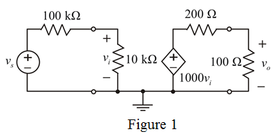

Step 1:
Consider the circuit diagram of voltage amplifier.

Step 2:
Calculate the output voltage.
Hence, the output voltage is .
Step 3:
(b)
Calculate the voltage gain from source to load.
Therefore, the voltage gain from source to load is.
Step 4:
(c)
Calculate the voltage gain from amplifier input to the load.
Therefore, the voltage gain is.
Step 5:
(d)
The output voltage across the load is doubled, if the current flowing in the circuit is doubled. Since current and resistance is inversely proportional to each other.
Hence, a resistance  is connected parallel to the input terminals to make effective resistance to halve.
is connected parallel to the input terminals to make effective resistance to halve.
Since, voltage gain remains unchanged, input voltage must be halve.
Calculate the input voltage.

Step 6:
Simplify the equation further.

Determine the value of  .
.
Therefore, connect a single resistor in parallel with the input side of value .